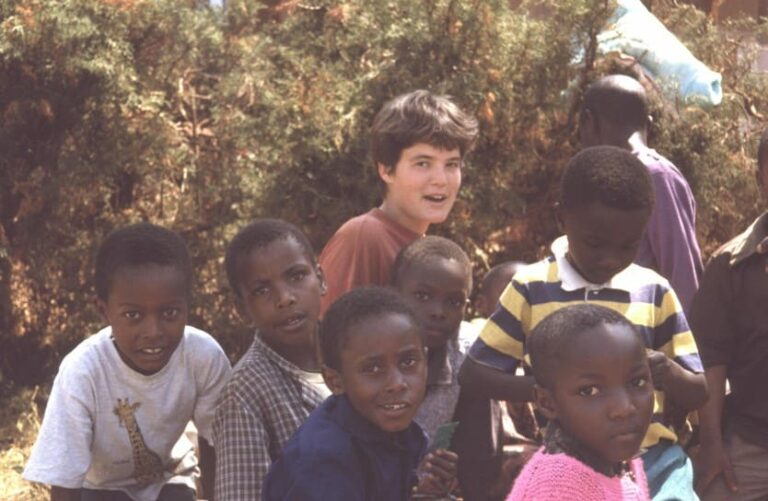

Wer wir sind
Ein kleiner Verein mit großer Wirkung.
Kein Kontinent hat ein schnelleres Bevölkerungswachstum; kaum eine Region ist reicher an Rohstoffen als Afrika. Gleichzeitig gehören Länder wie Tansania zu den ärmsten der Welt und können ihre enormen Probleme nicht aus eigener Kraft bewältigen.
Seit dem 23. Januar 2001 sind wir ein gemeinnütziger, eingetragener Verein in Bietigheim-Bissingen. Unser Partner vor Ort ist die Diözese Mbulu im Norden Tansanias – sie betreibt zwei Krankenhäuser, 15 Krankenstationen sowie fünf Sekundar- und Berufsschulen.
Unsere Geschichte